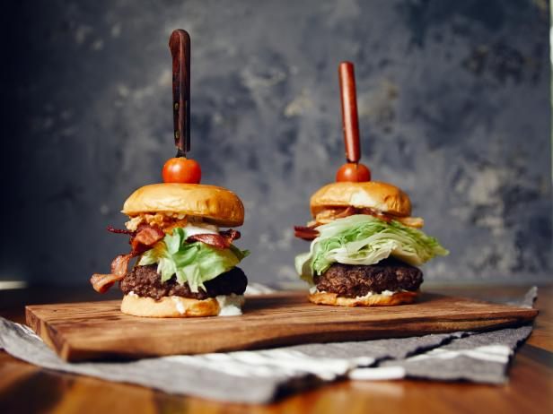

Steakhouse Burgers
Hands down, the best burger recipe around. A classic steakhouse burger
that is sure to leave everyone at the dinner table feeling happy and full. What more
could you really ask for?

This is the perfect recipe for the BBQ! Show off your skills on the grill, to your friends; on a warm summer night with the Best Steakhouse Burger!
Follow this simple and easy recipe that makes you look like a top level cook. While most restaurant recipes are difficult to replicate due to steakhouses blending
different types of beef - like sirloin, chuck, and short ribs - this recipe is a much simpler yet equally delicious alternative that will utilize supermarket ground beef, panade - a mixture of bread and milk - and lots of seasoning.
This recipe has given me the title of the burger master along my pals, they now call me "The burger conossieur." So, grab your beef, grab your apron, and lets get cooking.
Ingredients
- Canola oil, for frying
- 8 slices thick-cut bacon
- 1/2 medium red onion, sliced into 1/4-inch rings
- 1/2 cup buttermilk
- 1 cup flour
- 1 teaspoon House Seasoning, recipe follows
- 2 pounds 80/20 ground beef
- 1/2 teaspoon garlic powder
- Kosher salt and freshly ground black peppe
- 1/2 head iceberg lettuce, cut into 1/2-inch slices
- 1/2 cup to 1 cup Blue Cheese Dressing, recipe follows
- 4 brioche buns
- 4 large cherry tomatoes
Finally, How to make the best steakhouse burger
- Heat 2 inches of oil over medium-high heat in a medium heavy-bottomed saucepan to 365 degrees F.
- While the oil is heating, add the bacon to a large skillet over medium-high heat and cook until crispy and brown on both sides, about 10 minutes.
Remove to a paper towel-lined plate. Reserve 2 tablespoons bacon fat in a small bowl and set aside to cool.
- Place the onions in the buttermilk. Add the flour to a bowl or shallow baking dish. Scoop out a few onions at a time and dredge in the flour, shaking to remove any excess flour. Add to the hot oil and fry until golden brown and crispy,
about 4 minutes, then remove to a baking sheet with a wire rack and sprinkle with House Seasoning while still hot. Repeat with the remaining onions and set aside.
- Using your hands, mix the ground beef along with the cooled, reserved bacon fat and the garlic powder. Form the mixture into 4 loosely packed equal-sized patties with a slight dimple in the center to prevent them from doming.
Place onto a baking sheet or large plate and sprinkle both sides of each patty generously with salt and pepper. Heat the skillet that was used to cook the bacon over medium heat. Add the burger patties, dimple side up, and cook on the first side,
5 to 6 minutes. Flip the patties and cook until the internal temperature of the burger is 135 to 140 degrees F for medium (the internal temperature will continue to rise when you remove the burger from heat to reach the ideal temperature of 145
degrees F), about 5 minutes more. Remove the patties from the skillet.
- Add the brioche buns to the same skillet and toast until lightly browned.
- To build the burgers, add one patty on top of a toasted brioche bun half. Drizzle over a couple tablespoons of the Blue Cheese Dressing. Top with a few fried onions, a slice of iceberg lettuce, another drizzle of Blue Cheese Dressing and two slices
bacon. Top with the second half of the bun and place a cherry tomato on top, using a steak knife as a skewer to hold the burger together. Serve immediately.